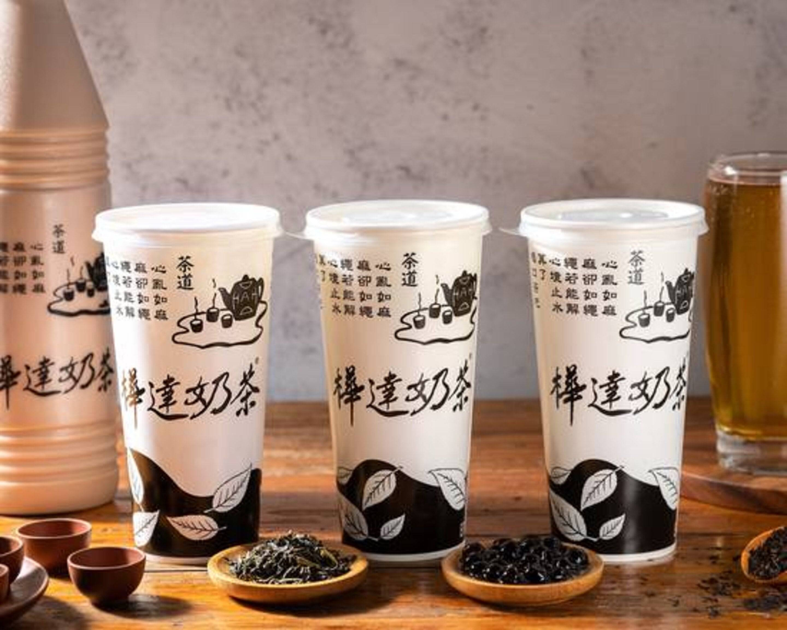

御典茶/推薦指數:★★★★

御典茶 是茶行起家的小攤，位在西子灣(哈瑪星)巷內，這裡有很多必吃美食。 蒙古奶茶使用普洱茶基底，每日從茶餅撥開醒茶製作，堅持不用散茶，加入成分 無調整的光泉鮮乳，加珍珠和粉角不用錢！奶茶的甜度來自熬煮的白糖、二砂，飲料不加冰塊，最後一口也維持好味道。
樺達奶茶/推薦指數:★★★★
茶味香醇，奶香也恰到好處。筆者私心推薦美容茶，不會過於甜膩
御典茶 是茶行起家的小攤，位在西子灣(哈瑪星)巷內，這裡有很多必吃美食。 蒙古奶茶使用普洱茶基底，每日從茶餅撥開醒茶製作，堅持不用散茶，加入成分 無調整的光泉鮮乳，加珍珠和粉角不用錢！奶茶的甜度來自熬煮的白糖、二砂，飲料不加冰塊，最後一口也維持好味道。
茶味香醇，奶香也恰到好處。筆者私心推薦美容茶，不會過於甜膩